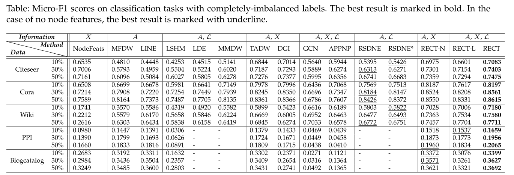
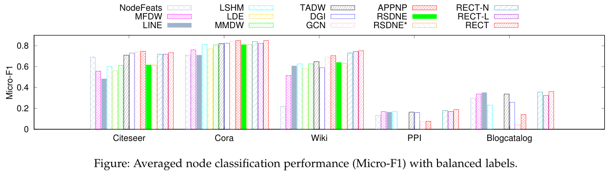

Zero-shot Graph Embedding (ZGE)
Problem definition

Zero-shot Graph Embedding (ZGE) refers to the process of learning discriminative graph embeddings when labeled data cannot cover all classes (also known as completely-imbalanced label setting). Here, "zero-shot" means to handle the nodes coming from unseen classes. This problem has practical significance, especially when the graph size is typical large and nodes can take on many values.
Our solution: RSDNE and RECT


We propose a shallow method RSDNE [1] and a GNN method RECT [2]. Our methods generally perform best in this zero-shot label setting. Especially, our RECT outperforms GCN by [20%~300%]. In addition, we note that: even in the balanced label setting, our methods could still achieve comparable performance to state-of-the-art semi-supervised methods. Therefore, we always recommend our methods for the scenario where the quality of labels cannot be guaranteed.
Why RECT works? In [3], we show that its core part RECT-L actually learns a prototypical model with the labeled data of seen classes. This reflects its reasonability on seen classes. On the other hand, the learned prototypical model maps the data from the raw-input space into a semantic space, like ZSL methods. As validated by lots of ZSL methods, this enables the success of transferring supervised knowledge of seen classes to unseen classes, indicating its reasonability on unseen classes.
Publications and Codes
- [1] Zheng Wang, Xiaojun Ye, Chaokun Wang, and etc. RSDNE: Exploring Relaxed Similarity and Dissimilarity from Completely-imbalanced Labels for Network Embedding. (AAAI 2018) [PDF, CODE-matlab, CODE-python].
- [2] Zheng Wang, Xiaojun Ye, Chaokun Wang, Jian Cui, and Philip S. Yu. Network Embedding with Completely-imbalanced Labels. (TKDE 2020) [PDF, CODE].
- [3] Zheng Wang and et al. Expanding Semantic Knowledge for Zero-shot Graph Embedding. (DASFAA 2021) [PDF].
- [4] Implementations of RECT[TKDE20] in the famous GNN libraries DGL and PyG.
- [5] Implementations of RECT[TKDE20] in biological deep-learning platform DeepBIO.
- [6] Tutorial on Zero-shot Graph Embedding given in International Young Scholars Forum at RUC slides.